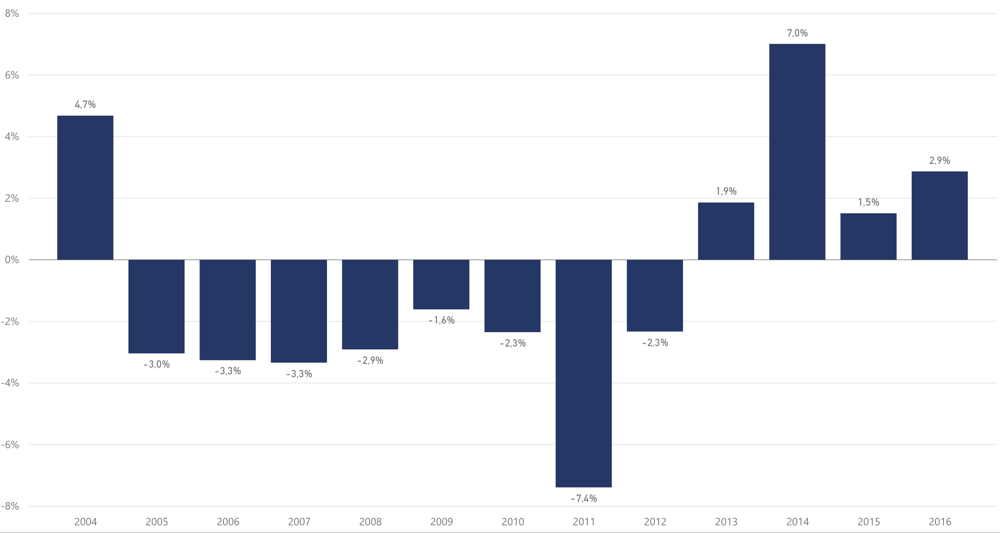
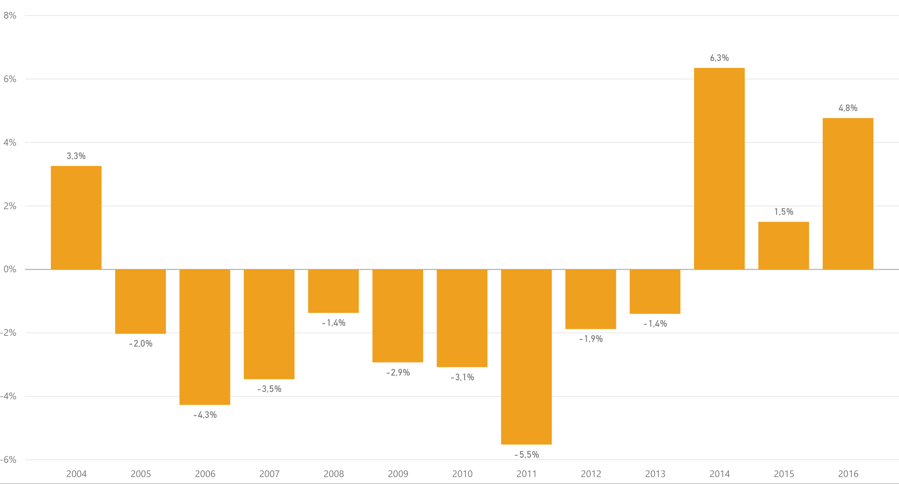
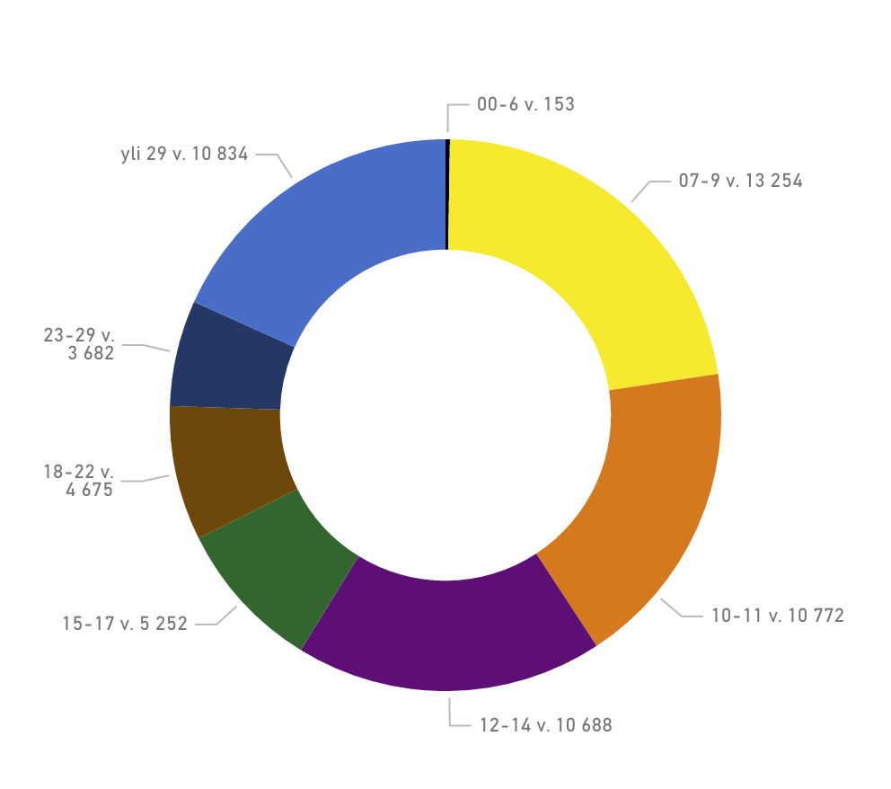
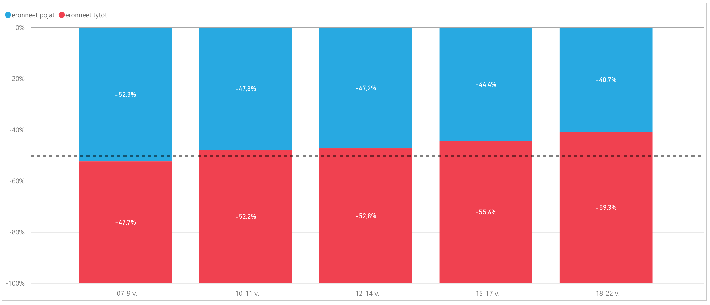
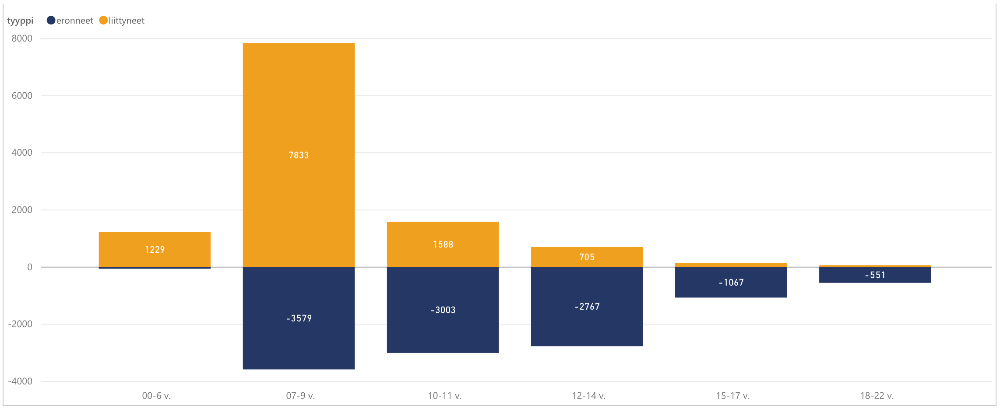
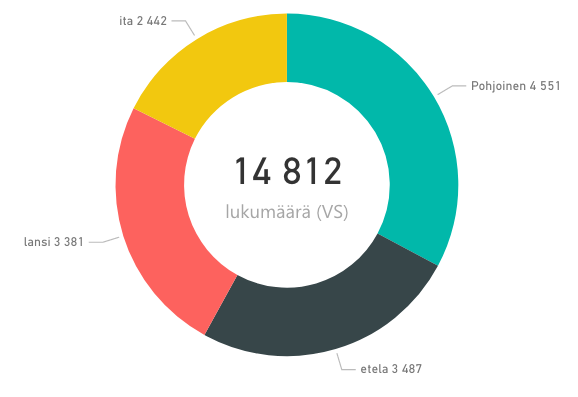

Jäsenistö
Suomen Partiolaisten jäsenet
Suomen Partiolaisten jäsenten määrä on kasvanut vuodessa 4,8 %. Jäsenmaksun maksaneiden määrä on kasvanut 2,9 %. Kaiken kaikkiaan partiossa oli vuoden 2016 aikana 80 758 jäsentä.
Jäsenmäärän muutos edellisvuoteen verrattuna:
Jäsenmaksun maksaneet jäsenet
Jäsenmaksun maksaneiden muutos edellisiin vuosiin.
Rekisteriin kirjatut jäsenet
Kirjattujen jäsenten muutos edellisiin vuosiin.
Ikäryhmät
Partiolaisten määrä on kasvanut tasaisesti kaikissa ikäryhmissä. Näin ollen ikäluokkien suhteelliset koot ovat pysyneet edellisvuoden tasolla. Partion kolme nuorinta ikäluokkaa kattaa 59 % jäsenistöstä. Kohderyhmittäin tarkasteltuna näyttäisi siltä että tarpoja-iän jälkeen tapahtuisi suuri pudotus samoajiin siirryttäessä. Jos kuitenkin tarkastelee jäsenmäärä ikäkausitasolla näkee että jäsenmäärän väheneminen on hyvin tasainen, joka ikävuoden jäseniä eroaa saman verran 10 ikävuodesta alkaen noin 15 ikävuoteen saakka.
Ikäkausien suhteelliset osuudet 31.7.2016
Ikäkausien suhteellisten osuuksien muutos

Kohderyhmäikäisten ikäjakauma
Partion suurin ikäluokka on kuten aiempina vuosina 9-vuotiaat.
Partiorekisteriin kirjattujen 7-22-vuotiaiden ikäjakauma 31.7. sukupuolittain
Sukupuolijako
Vuonna 2016 tyttöjä oli poikia enemmän lähes kaikissa ikäryhmissä. Poikkeuksena kaksi nuorinta ikäluokka; tyttöjä ja poikia on käytännössä saman verran 8-vuotiaissa, mutta 7-vuotiaissa poikia on hieman enemmän kuin tyttöjä. Silti koko jäsenmäärää tarkasteltaessa sukupuolien välinen ero ei ole kovin suuri, tytöt ja naiset edustavat noin 53 % jäsenistöstä.
Sukupuolien suhteellinen osuus ikäkausista
Jäsenien jakautuminen ikäkausiin piirikohtaisesti
Sukupuolien osuudet ikäkauden liittyneistä
Sukupuolien osuudet ikäkauden eronneista
Liittyneet ja eronneet
Partion jäsenistöstä vaihtui vuoden 2016 aikana noin viidennes. Kohderyhmäikäkausia tarkastellessa voi todeta, että vuonna 2016 partioon liittyi 10341 uutta jäsentä ikäkausissa 7-22 vuotta. Samoista ikäluokista erosi 10967. Eli partioon liittyineitä ja eronneita oli vuonna 2016 suurin piirtein yhtä monta.
Partioon liitytään, kuten aikaisempina vuosina, pääasiassa sudenpentuna, mutta jonkun verran myös seikkailijoina ja tarpoajina. Eroaminen jakaantuu tasaisemmin kolmen nuorimpien ikäluokkien välille kuin liittyminen, joskin hieman enemmän eronneita löytyy sudenpentujen ikäluokasta kuin seikkailijoiden ja tarpoajien ikäluokista.
Vuoteen 2015 verrattuna liittyminen ja eroaminen näyttää tapahtuman suunnilleen samassa mittakaavassa ja samoissa ikäryhmissä tänäkin vuonna. 2015 oli ensimmäinen vuosi, kun liittyneet ja eronneet laskettiin partiorekisteri Kuksan tiedoista, tätä aikaisempi tieto ei ole vertailukelpoinen, josta johtuen ei ole pidempiaikaisia trenditietoja saatavilla.
Liittyneet ja eronneet vuosittain
Liittyneet ja eronneet ikäryhmittäin 2016
Ikäkausien osuudet liittyneistä ja eronneista
Liittyneet ja eronneet 2016 piireittäin verrattuna piirin jäsenmäärään 31.12.2016
Koulutus
Ryhmien aikuisen tuen koulutus
Partiomenetelmän osa-alueet
Partiolaisten ikä eri ikäkausissa
Ryhmien aikuinen tuki
Kohderyhmäikäisten johtajatehtävät
Vartiotoiminta
Partio-ohjelma
Partio-ohjelman toteutumista eritavoilla vuosiselosteessa. Alla on kuvattu suoritetun partio-ohjelman volyymeja ikäkausittain ja lippukuntien arvio samoaja ja vaeltaja ohjelmien toteutumisesta. Datassa on listattu erikseen sekä uusi että vanha samoaja ja vaeltajaohjelma.
Raportin kohdassa partio-ohjelman kasvatus tavoitteet on lippukunnat arvioineet partiolaisten kehittymistä oman ikäkauden kasvatustavoitteissa. Yleisenä trendinä voidaan huomata ettei ikäkausien ohjelma suoritusten trendit täyty.
Sudenpentuohjelma
74 049 jälkeä per sudenpentu vuosittain
Sudenpennuilla on partio-ohjelmassa 35 jälkeä. Kaikkia jälkiä tehtiin vuonna 2015. Suosituimmat jäljet ovat vuodesta toiseen samoja perinteisiä partiotaitoja. Vähiten suosittuja jälkiä ovat meripartiointiin liittyvät jäljet, mikä luultavasti johtuu meripartiolippukuntien suhteellisen vähäisestä määrästä ja maapartiolaisten vähistä mahdollisuuksista tehdä meripartiojälkiä.
Muutokset aiempiin vuosiin ovat pieniä. Vuoteen 2015 verrattuna eniten suosiotaan ovat kasvattaneet Ensiapu, Luonnossaliikkuja sekä luonnontuntemus. Toiseen suuntaan erottuvat Retki ja Taiteilija joita on tehty huomattavasti vähemmän vuoteen 2015 verrattuna . Maailma jälki on menettänyt suosiotaan toista vuotta putkeen.
Seikkaijaohjelma
Yhteensä 40 052 tehtyä taitomerkkiä
Suosituimmat taitomerkit olivat leipuri, tapaturma, retkikokki, hätäensiapu ja salapoliisi.
Keskimäärin jokainen seikkija suoritti kaksi taitomerkkiä. Määrä on kasvanut noin 5% vuodesta 2015.
Yhteensä 14 812 tehtyä ilmansuuntaa (pl. Tervetuloa -vaihe). Tervetuloa -vaihetta tehtiin yhteensä 3 745 kappaletta.
Pääilmansuunnista suosituin oli pohjoinen ﴾4 500 kpl﴿, ja siitä tehtyjen ilmansuuntien määrä tippui lineaarisesti ohjeellisen järjestyksen mukaisesti. Suurin pudotus määrissä tapahtuu lännen ja idän välissä. Tervetuloa jälkeä tehtiin 3 745 kpl, kun vuonna 2015 niitä tehtiin noin 4 500 kpl.
Vuonna 2016 seikkailija teki vuodessa keskimäärin 1,38 ilmansuuntaa. Tavoitteena on tehdä vuodessa kaksi ilmansuuntaa, yksi keväällä ja toinen syksyllä.
Tarpojaohjelma
Tarpojien tarpoja suoritettiin yhteensä 8 435 kappaletta.
Suosituin tarppo oli leiri, jonka määrät myös nousivat eniten. Luovuus‐tarpon suosio puolestaan putosi hieman. Suoritettujen tarppojen kokonaismäärä kasvoi noin 400. Keskimäärin suoritettujen tarppojen määrä pysyi siinä oin 0,8 paikkeilla tarpojaa kohden, kun tavoite on 2.
KITTien määrä on pysynyt suunnilleen samana edelliseen vuoteen verrattuna ollen 21 % .
69 % Lippukunnista on tehnyt tarppoja vuonna 2016. Määrä on kasvanut 5 prosenttiyksikköä vuodesta 2015.
Samoajaohjelma
Samoajat tekivät yhteensä 3 288 varustepakettia.
Samoajaohjelma päivittyi vuonna 2016, eli data ei ole vertailukelpoista edelliseen vuoteen. Tehtyjen vanhan Partiotaitokilpailut ohjelman varustepakettien määrät ovat kaikki tippuneet suhteellisesti suunnilleen yhtä paljon eli varustepakettien suosituimmuusjärjestys on sama. Tämä ja tieto siitä että lippukunnat, joiden samoajat ovat tehneet varustepaketteja on tippunut 19 prosenttiin ﴾vuonna 2015 25%﴿ ovat merkkejä siitä että uuteen samoaja ollaan siirtymässä hyvää vauhtia.
Uudesta ohjelmasta suosituimpia aktiviteetteja ovat olleet Vaeltamaan ryhmänohjaajakoulutus ja tervetuloa joita on tehty noin 500 kumpaakin. Seuraavaksi suosituimpia aktiviteetteja on tehty noin 250 kpl.
Ohjelmauudistuksen voidaan katsoa olevan kohtuullisen onnistunut, sillä 0 uutta ja vanhaa ohjelmaa on yhteensä tehty 36 % lippukunnista ﴾201 vuosiselosteeseen vastannutta lippukuntaa﴿, ja nousua vuoteen 2015 on 11 prosenttiyksikköä.
Ryhmänohjaajakoulutus kuuluu jokaiselle samoajaikäiselle ikäkauden alussa osana partio‐ohjelmaa. Ryhmänohjaajakoulutukseen osallistui samoajia 41 % suomen lippukunnista.
Samoajat tekevät vähemmän taskuja. Tehtyjen taskujen määrä on laskenut toista vuotta peräkkäin. Vuonna 2015 tehtiin kaikkia taskuja vähemmän kuin vuotta aiemmin.
Samoajien ja vaeltajien ohjelma
Lippukuntien vastausten mukaan samoajat toteuttavat partio‐ohjelmaa kohtuullisen hyvin sekä lippukunnassa että alueella tai piirissä. Vaeltajien ohjelman toteutuminen sen sijaan on heikompaa. Tilanne on parantanut hieman edellisvuosiin verrattuna.
Kuvien tulkinta
Lippukunnat vastaavat väittämiin viisiportaisella asteikoilla: 1 = vastaa huonosti ... 5=Vastaa täysin. Vasemmalla vuoden 2016 vastausten määrät vaihtoehdoittain ‐ oikealla kahden vuoden vastausten keskiarvot.
Vaeltajaohjelma
Vaeltajat tekivät yhteensä 1 790 rastia.
Vaeltajaohjelma päivittyi vuonna 2016, eli data eli ole vertailukelpoista edelliseen vuoteen. Vanhasta vaeltajaohjelmasta suosituimpia aktiviteetteja ovat olleet käytännön johtaminen, arjen taidot ja elämänhallinta. Tehtyjen aktiviteettien määrät on niin pieniä, että jo yksikin vaeltajaryhmä voisi muuttaa tehtyjen aktiviteettien järjestystä tilastoissa. Uuden ohjelman rasteja tehtiin noin 1800.
Uudesta ohjelmasta suosituimmat rasitit ovat tervetuloa, pesti ja partiojohtajan peruskurssi. Joko uutta tai vanhaa ohjelmaa on tehty noin 17 % lippukunnista, joka on samaa tasoa viime vuosien kanssa.
Ulkomaanprojektien määrä laski, jota selittänee Roihu, koska kotimaassakin oli kansainvälinen elämys tarjolla. Kotimaan projektin tehneiden määrä nousi noin 40 hengellä. Vuonna 2016 4 % vastanneista lippukunnista ilmoitti tehneensä Suomi‐projektin ja 4 % ulkomaanprojektin.
Vanha vaeltajaohjelma
Kasvatustavoitteet
Kuinka suuri osa ikäkauden partiolaisista taitaa seuraavat partion kasvatustavoitteet?
Sudenpentu - kasvatustavoitteiden taitaminen 2016
Seikkailija - kasvatustavoitteiden taitaminen 2016
Tarpoja - kasvatustavoitteiden taitaminen 2016
Samoaja - kasvatustavoitteiden taitaminen 2016
Vaeltaja - kasvatustavoitteiden taitaminen 2016
Sudenpentu - kasvatustavoitteiden taitaminen 2016
Pestaus
Pestaus kasvattaa suosiotaan vuosi vuodelta. Lippukunnanjohtajien, hallituksen, johtajaneuvoston, projektijohtajien ja ikäkausijohtajien pestaus on lisääntynyt tasaisesti viimeisen kolmen vuoden aikana. Entistä useampi lippukunta pestaa vapaaehtoiset kirjallisesti.
Toiminta luonnossa
Yöretkiä tehdään vähemmän Ikäluokkien määrään suhteutettuna yöretkiä tehdään vuosi vuodelta vähemmän. Myös yöretkien kokonaismäärä on laskussa, vaikka kohderyhmäikäisten määrä on noussut. Päiväretkiä on tehty on saman verran kuin aiempinakin vuosina.